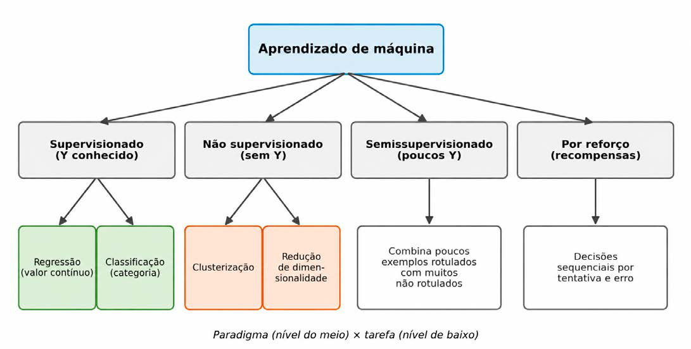

Módulo 3 | Aula 1
Introdução ao Machine Learning
Grandes paradigmas de aprendizado de máquina
A escolha de uma abordagem de ML não é arbitrária: ela depende da pergunta de pesquisa e dos dados disponíveis nos sistemas de informação em saúde, em especial, de existir ou não uma variável alvo Y conhecida. A literatura organiza as abordagens em quatro grandes paradigmas. Dentro de cada paradigma, realizamos diferentes tarefas, como mostra a Figura 3.
Figura 3 - Paradigmas de aprendizado de máquina e suas principais tarefas.

Aprendizado supervisionado
Ocorre quando os dados de treinamento são rotulados, isto é, o desfecho Y é conhecido para cada exemplo. É o paradigma descrito até aqui e o mais utilizado em saúde. Suas duas tarefas principais são:
- Regressão: previsão de valores numéricos contínuos, como o custo de uma internação, o número de dias de permanência ou a taxa de mortalidade de um município.
- Classificação: previsão de categorias, como positivo ou negativo para um agravo, óbito ou não óbito, risco baixo, médio ou alto.
Um mesmo fenômeno pode ser formulado das duas maneiras. A taxa de mortalidade infantil de um município pode ser prevista como um valor (regressão) ou como uma faixa baixa, média ou alta (classificação). Transformar um valor contínuo em faixas facilita a comunicação com a gestão, mas descarta informação; por isso, a escolha deve ser justificada pela pergunta que se quer responder.
Um modelo de regressão treinado com dados municipais pode estimar a taxa de mortalidade infantil a partir de indicadores de cobertura de pré-natal, saneamento e renda. Além da previsão, a análise das variáveis mais relevantes para o modelo pode sugerir onde investimentos teriam maior potencial de impacto, desde que essas pistas sejam confrontadas com o conhecimento epidemiológico, pois associação preditiva não é o mesmo que causalidade.
Aprendizado não supervisionado
É aplicado quando não há uma variável alvo Y. O objetivo não é prever, mas descobrir estruturas presentes nos próprios dados, o que a aula 3 do módulo 1 chamou de objetivo de descoberta. As tarefas mais comuns são:
- Clusterização (agrupamento): reunir observações semelhantes entre si. Por exemplo, agrupar municípios com perfis parecidos de mortalidade, oferta de serviços e condições socioeconômicas para desenhar políticas territoriais. Um dos grupos encontrados pode, por exemplo, reunir municípios com alta demanda e baixa capacidade instalada, sinalizando possíveis vazios assistenciais.
- Redução de dimensionalidade: resumir muitas variáveis correlacionadas em um número menor de novas variáveis, preservando a maior parte da informação (variabilidade) original. A técnica mais conhecida é a Análise de Componentes Principais (Principal Component Analysis – PCA), já mencionada na aula 3 do módulo 1 como parte da etapa de transformação do KDD. Ela é útil, por exemplo, para condensar dezenas de indicadores socioeconômicos em poucos componentes, que podem servir de base a um índice de vulnerabilidade.
Observe a diferença: a clusterização agrupa linhas (observações), enquanto a redução de dimensionalidade condensa colunas (atributos). Nos dois casos, como não há um Y para comparar, a interpretação dos resultados depende fortemente do conhecimento de quem analisa: são os especialistas que dizem se os grupos encontrados fazem sentido para a Saúde Pública.
Aprendizado semissupervisionado
Em muitos problemas do SUS, o desfecho já vem registrado nos próprios sistemas: a Autorização de Internação Hospitalar (AIH) informa se o paciente recebeu alta ou foi a óbito, e o SINASC registra o peso ao nascer. Em outros, porém, obter o rótulo exige trabalho especializado. Lembre-se das causas mal definidas de óbito (garbage codes), discutidas na aula 1 do módulo 1: atribuir a causa correta a uma declaração de óbito pode exigir investigação e revisão por especialistas, o que é caro e demorado.
Nesses casos, é comum dispor de uma pequena parte dos dados rotulada e de um grande volume sem rótulo. O aprendizado semissupervisionado combina as duas partes: usa os poucos exemplos rotulados para orientar o aprendizado e aproveita a estrutura dos muitos exemplos não rotulados para aprimorá-lo.
Aprendizado por reforço
No aprendizado por reforço, um agente aprende a tomar uma sequência de decisões interagindo com um ambiente: a cada ação, recebe uma recompensa ou uma penalidade e, por tentativa e erro, aprende a estratégia que maximiza o resultado ao longo do tempo. Em saúde, pode ser aplicado a problemas como a definição de rotas e da ordem de reabastecimento na distribuição de vacinas, ou a estratégias de alocação de recursos que se ajustam à evolução de uma epidemia.
Esse paradigma ainda é pouco utilizado na Saúde Pública, e há uma razão importante para isso: não é aceitável aprender "por tentativa e erro" com a população real. Por isso, o aprendizado por reforço costuma depender de ambientes de simulação, e suas recomendações precisam ser validadas por especialistas antes de qualquer uso.
Tabela 3 – Síntese dos paradigmas de aprendizado de máquina.
| Paradigma | Pergunta típica | Exemplo em saúde |
|---|---|---|
| Supervisionado | Qual será o desfecho deste caso? | Prever o tempo de permanência de uma internação ou o risco de óbito hospitalar. |
| Não supervisionado | Que estruturas existem nos dados? | Agrupar municípios por perfil epidemiológico; resumir indicadores com PCA. |
| Semissupervisionado | Como aproveitar poucos rótulos e muitos dados sem rótulo? | Apoiar a qualificação de causas mal definidas a partir de uma amostra revisada. |
| Por reforço | Qual sequência de decisões produz o melhor resultado? | Simular estratégias de distribuição de vacinas. |
Fonte: Elaborada pelos autores (2026).